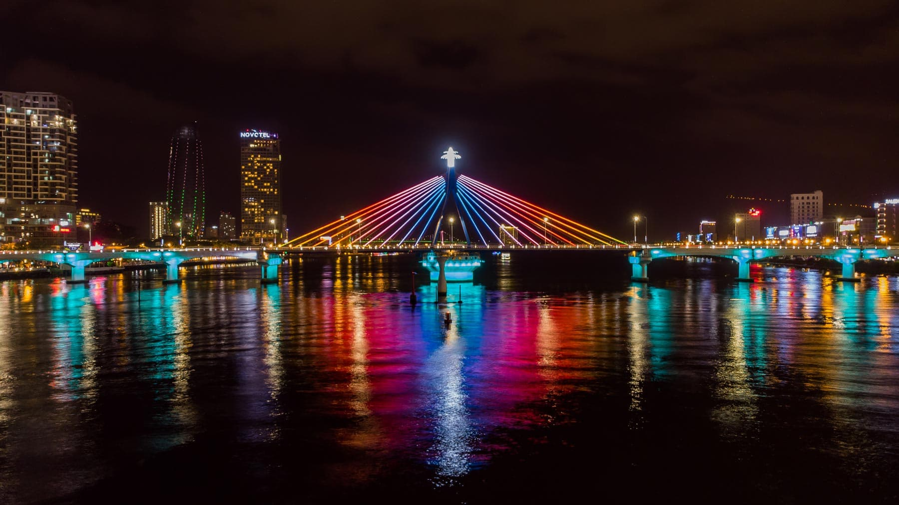

Cầu quay sông Hàn hay Cầu sông Hàn là biểu tượng của thành phố Đà Nẵng. Cầu được khởi công tháng 9 năm 1998, khánh thành vào tháng 3 năm 2000. Đây là cây cầu xoay đầu tiên do kỹ sư, công nhân Việt Nam tự thiết kế và thi công. Đến hiện tại, cầu quay sông Hàn vẫn là cây cầu quay duy nhất ở Việt Nam.
Hàng tuần cầu sẽ quay 1 trụ và 2 nhịp giữa sông. Từ thứ 2 đến thứ 6, cầu sẽ quay vào lúc 1 giờ sáng và đóng cầu trước 2 giờ sáng. Trong 2 ngày cuối tuần là thứ 7 và chủ nhật, cầu sẽ quay vào thời gian 23 giờ đến 24 giờ.